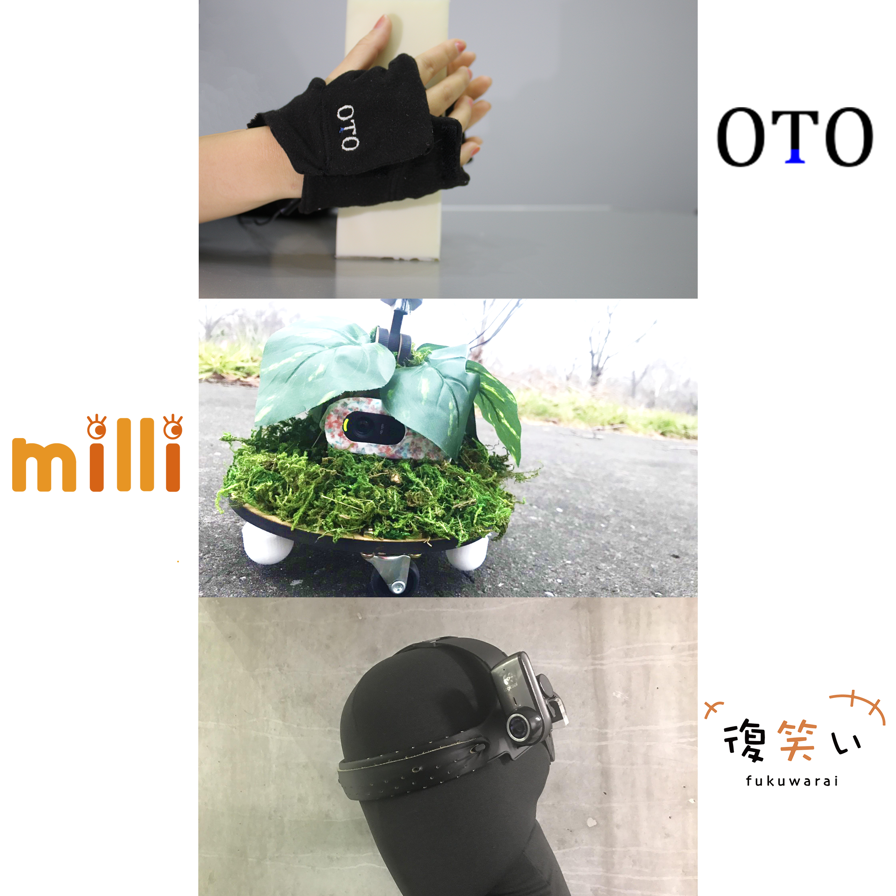

<!DOCTYPE html>
<html>

<head>
  <meta charset="utf-8">
  <link rel="stylesheet" type="text/css" href="parts.css">
  <title>future body</title>
</head>

<body>
  <div style="text-align:center">
    <a href="index.html">
      
    </a>
  </div>
  <div class="tabs">
    <input id="about" type="radio" name="tab_item" checked>
    <label class="tab_item" for="about">future body</label>
    <div class="tab_content" id="about_content">
      <div class="tab_content_description">
        <div style="text-align:center">
          
        </div>
        <p class="c-txtsp">
          <完成日時> 2019年12月<br>
          <制作期間> 7ヶ月<br>
          <制作人数> 15人<br>
          <使用技術> Arduino, レーザーカッター, 3Dプリンター, Python, 機械学習, ミシン, Raspberry Pi, HMD, カメラ, Photoshop, Illustrator, HTML, CSS, JavaScript<br>
          <概要><br>
          &emsp;プロジェクト学習「future body」にて、3つのデバイス完成させた。
          音を使って物体の中身を知ることのできる「OTO」、小人のような知覚体験をする「milli」、日常生活中にある笑った場面を自動で振り返る「復笑い」である。
          「復笑い」のグループ所属し、映像解析やWebサイト制作を担当した。
          <br>
          <関連URL><br>
          ・<a href="https://www.fun.ac.jp/edu_career/project_learning/" target="_blank">プロジェクト学習</a><br>
          ・<a href="https://www.fun.ac.jp/edu_career/project_learning/report_2018/" target="_blank">2018年度報告書一覧</a>


        </p>

      </div>
    </div>
    <div class="footer_in l-center">
      <a href="index.html">
        <p>戻る</p>
      </a>
    </div>
  </div>


  <footer>
    <div class="footer_in l-center">
      <small>&copy;2019 Kazuki Takiya</small>
    </div>
  </footer>
</body>

</html>
